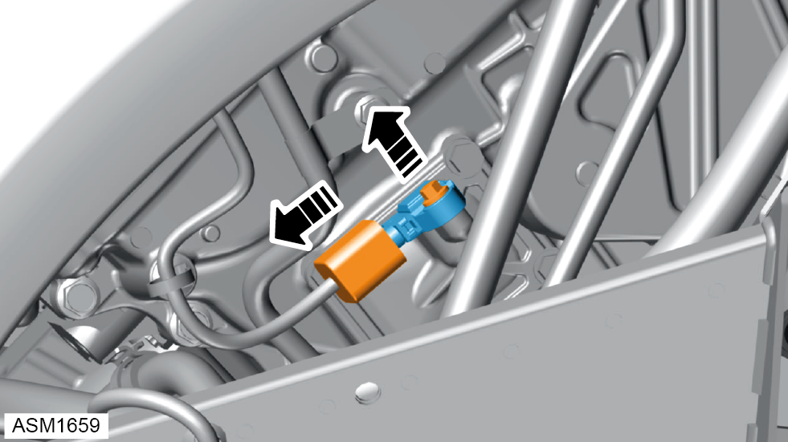

Sensor - Differential Pressure - V6
Print
Operation Code: 17.06.38-02
Removal
- Disconnect battery. Refer to procedure.
- Remove rear wheelarch liner right side.
NOTE: Procedure is the same for left side component.

- Disconnect harness connector from differential pressure sensor.
- Remove M5x16 bolt securing differential pressure sensor to engine. Torque 5 Nm.
- Remove differential pressure sensor.
Installation
- Installation is the reverse of removal procedure except for the following:
- After installation perform a diagnostic read and clear error memory using Lotus Insight tool.